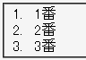
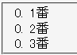

ul要素またはol要素の子要素ではないリストマーカー要素に順序つきリストマーカーを設定すると、リストマーカーの数値がすべて0になる。
<div style="padding-left:2em; list-style-type:decimal;"> <div style="display:list-item;">1番</div> <div style="display:list-item;">2番</div> <div style="display:list-item;">3番</div> </div>
リストアイテム要素の親要素をdiv要素にした場合の例です。リストアイテムにはアラビア数字のリストマーカーが表示されるはずです。
WinIE6.0標準モード
Netscape7.1標準モード
リストアイテム要素の親要素に -moz-counter-reset:-html-counter 0; と指定することでこの不具合を回避することができます。これはMozillaの独自CSSプロパティであり、ul要素とol要素にはデフォルトでこのプロパティと値が指定されています。
<div style="padding-left:2em; list-style-type:decimal; -moz-counter-reset: -html-counter 0;"> <div style="display:list-item;">1番</div> <div style="display:list-item;">2番</div> <div style="display:list-item;">3番</div> </div>